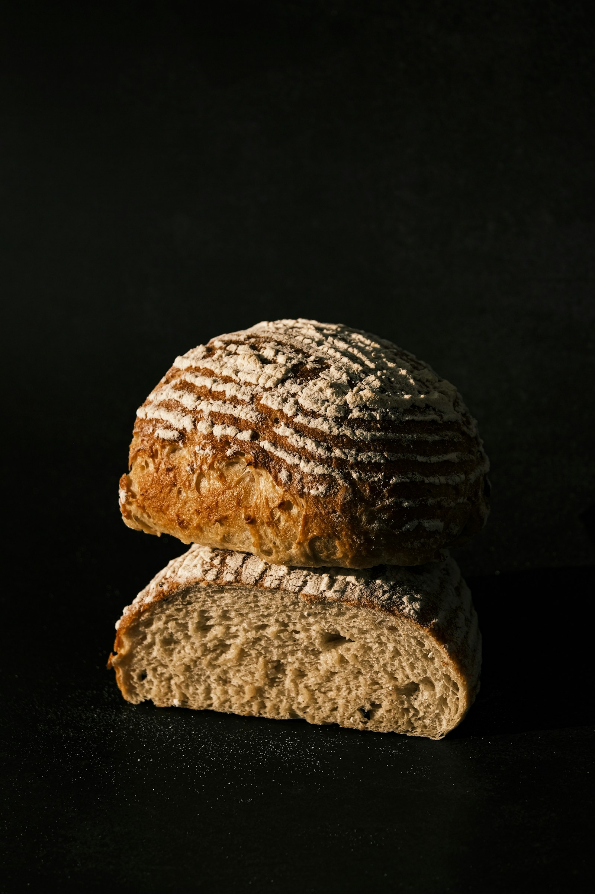

MEHL. WASSER. EIN BISSCHEN ZEIT.
Welches Brot
backst du heute?
Finde das Rezept, das zu deinen Zutaten passt.

Gutes Brot beginnt hier.DIE REZEPTSAMMLUNG
MEHL. WASSER. EIN BISSCHEN ZEIT.
Finde das Rezept, das zu deinen Zutaten passt.

Gutes Brot beginnt hier.DIE REZEPTSAMMLUNG